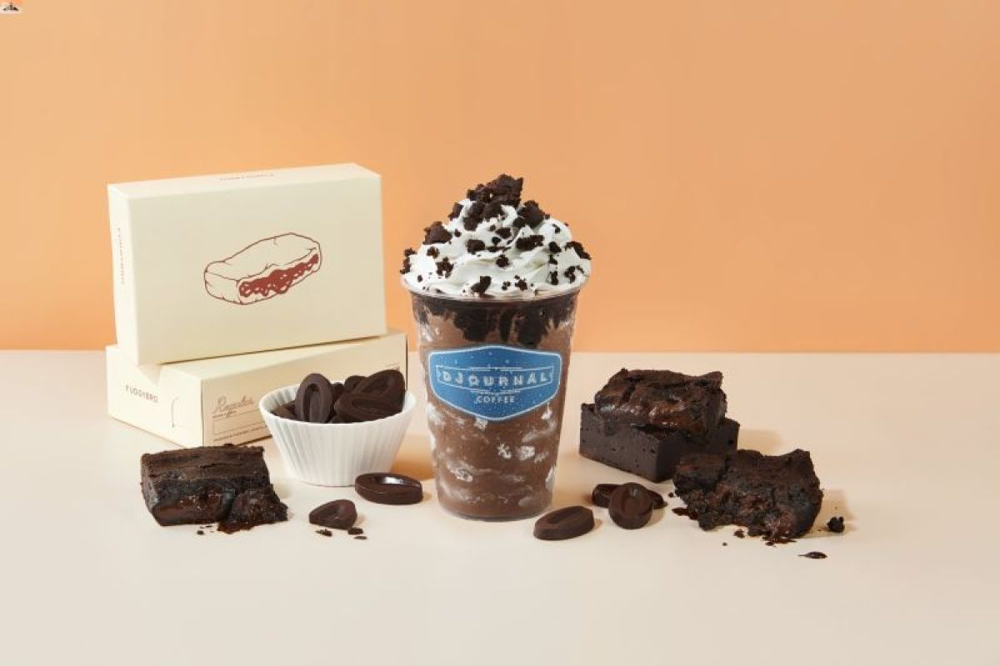

Kolaborasi Djournal Coffee dan Fudgybro Hadirkan Brownie Viral Versi Minuman
Djournal Coffee berkolaborasi dengan Fudgybro, brownie dessert yang tengah viral di media sosial. Kolaborasi ini menghadirkan dua menu frappe spesial yang terinspirasi dari brownie khas Fudgybro: Valrhona Double Chocolate Frappe dan Red Velvet Cheesecake Frappe.
Menu-menu ini tersedia dari 20 November 2023 hingga pertengahan Januari 2024. Sendyjaja selaku Research & Development Manager Djournal Coffee menjelaskan inspirasi di balik pengembangan menu spesial kuliner ini.
"Kami ingin menghadirkan sesuatu yang istimewa bagi para pelanggan setia kami. Inspirasinya datang dari kelezatan brownie Fudgybro dan keinginan kami untuk menciptakan kombinasi yang baru dengan sentuhan khas Djournal Coffee. Proses pengembangan melibatkan berbagai eksperimen cita rasa hingga akhirnya menciptakan menu kolaborasi yang terbaik," kata Sendyjaja.
Menu kreatif ini diuji dan disempurnakan melalui serangkaian uji coba rasa. Mulai dari menu Valrhona Double Chocolate Frappe yang menggunakan 70 persen dark chocolate hingga Red Velvet Cheesecake Frappe dengan citarasa yang kaya.
"Ini adalah momen tak terduga bagi Fudgybro. Kolaborasi ini tidak hanya menciptakan versi Shakesbro yang lebih baik, tetapi juga minuman frappe cokelat brownie dan red velvet terbaik yang pernah ada," kata Rayendra Abiyasa selaku owner FudgyBro.

"Menu kolaborasi ini memiliki keunikan yang membedakannya dari Shakesbro, yaitu disajikan dalam bentuk frappe dengan whipped cream dan garnish brownie, memberikan rasa yang lebih bold dan kaya," lanjutnya.
Kolaborasi ini merupakan wujud antusiasme tersebut yang dipersembahkan kepada para penggemar Djournal Coffee dan Fudgybro.
Sebagai perusahaan yang telah lama hadir dalam lanskap kuliner Indonesia, ISMAYA Group coba terus berkomitmen memberikan pengalaman kuliner yang unik dan inovatif.
"Kami tidak hanya bangga dengan kopi lokal berkualitas tinggi, tetapi juga dengan kolaborasi kami dengan merek lokal seperti Fudgybro yang menghasilkan produk yang lezat sekaligus mendukung usaha lokal," tutup James Hezekiah selaku Marketing Manager Djournal Coffee.